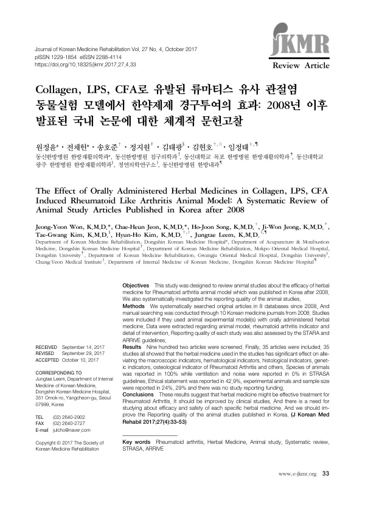

The Effect of Orally Administered Herbal Medicines in Collagen, LPS, CFA Induced Rheumatoid Like Arthritis Animal Model: A Systematic Review of Animal Study Articles Published in Korea after 2008
Won JY, Jeon CH, Song HJ, Jeong JW, Kim TG, Kim HH, Leem J
Journal of Korean Medicine Rehabilitation 27(4):33-53

첫 장 · 오픈액세스First page · open access
논문 소개Summary
류마티스 관절염은 아직 뚜렷한 완치 방법이 없어 만성 경과를 밟습니다. 한약 치료의 기전을 밝히려는 동물실험이 국내에서 여러 편 발표되었지만, 그 결과들을 한자리에 모으고 연구가 제대로 보고되었는지까지 따져 본 적은 없었습니다. 이 고찰은 그 두 가지를 함께 했습니다.
여덟 개 데이터베이스에서 2008년 이후 발표된 원저를 찾고 한의학 학술지 열 곳을 손으로 훑었습니다. 콜라겐과 지질다당류, 완전프로인트항원보강제로 유발한 류마티스 유사 관절염 동물모델에 한약을 경구투여한 연구가 대상입니다. 902편을 선별해 최종 35편이 포함되었습니다.
결과는 한쪽으로 쏠렸습니다. 35편 모두가 사용한 한약이 육안 지표와 혈액학적 지표, 조직학적 지표, 유전자 지표, 골 지표 등에서 유의한 효과가 있었다고 보고했습니다. 서른다섯 편이 모두 양성이라는 것은 그 자체로 읽을 거리입니다. 효과가 없었던 실험은 발표되지 않았을 가능성, 곧 출판 비뚤림을 생각하지 않을 수 없습니다.
그래서 이 고찰의 무게는 두 번째 축에 있습니다. STARA와 ARRIVE 지침으로 보고의 질을 매겼더니 빈틈이 드러났습니다. 동물의 종은 100% 보고되었지만 환기와 소음은 0%였습니다. 윤리 승인 진술은 42.9%, 실험동물과 표본 수는 각각 24%와 29%에서만 보고되었고 연구비를 밝힌 논문은 한 편도 없었습니다. ARRIVE 지침의 아홉 항목이 보고율 50% 이하였고 열 항목은 어느 논문에서도 보고되지 않았습니다.
저자들의 결론은 두 갈래입니다. 한약이 류마티스 관절염에 효과적인 치료일 수 있으나 임상연구로 확인해야 하고, 개별 처방과 약재의 효과와 안전성을 따로 연구해야 하며, 무엇보다 국내에서 발표되는 동물실험의 보고 질을 높여야 한다는 것입니다. 결과를 모으는 일과 그 결과를 얼마나 믿을 수 있는지 세어 보는 일을 같은 논문 안에서 한 셈입니다.
Rheumatoid arthritis still has no clear cure and follows a chronic course. Numerous animal experiments seeking the mechanisms of herbal treatment have been published in Korea, but their results had never been gathered together, nor had anyone examined whether the studies were properly reported. This review did both.
Eight databases were searched for original articles published since 2008, with hand searching across ten Korean medicine journals. Eligible studies used animal models of rheumatoid-like arthritis induced by collagen, lipopolysaccharide or complete Freund's adjuvant, with orally administered herbal medicine. Nine hundred and two articles were screened and 35 finally included.
The results all fell one way. All 35 reported that the herbal medicine used had significant effects on macroscopic, haematological, histological, genetic and osteological indicators. That all thirty-five were positive is itself worth reading: experiments finding no effect may not have been published, and publication bias cannot be set aside.
The weight of this review therefore rests on its second axis. Assessing reporting quality against the STARA and ARRIVE guidelines exposed the gaps. Animal species was reported in 100% of studies, ventilation and noise in 0%. Ethical statements appeared in 42.9%, details of experimental animals and sample size in 24% and 29% respectively, and not one study reported its funding. Nine ARRIVE items had reporting rates of 50% or below, and ten items were reported in no study at all.
The authors' conclusions run in two directions: herbal medicine may be an effective treatment for rheumatoid arthritis but must be confirmed in clinical studies, the efficacy and safety of individual prescriptions and herbs need study in their own right, and above all the reporting quality of animal studies published in Korea must improve. Gathering the results and counting how far those results can be trusted were done within one paper.
인용Cite
Won JY, Jeon CH, Song HJ, Jeong JW, Kim TG, Kim HH, Leem J. The Effect of Orally Administered Herbal Medicines in Collagen, LPS, CFA Induced Rheumatoid Like Arthritis Animal Model: A Systematic Review of Animal Study Articles Published in Korea after 2008. Journal of Korean Medicine Rehabilitation. 2017;27(4):33-53. doi:10.18325/jkmr.2017.27.4.33